RAŠTO DARBO RENGIMAS
Stiliaus modifikavimas
1 žingsnis iš 22
Pasirenkate meniu ‘Pagrindinis’
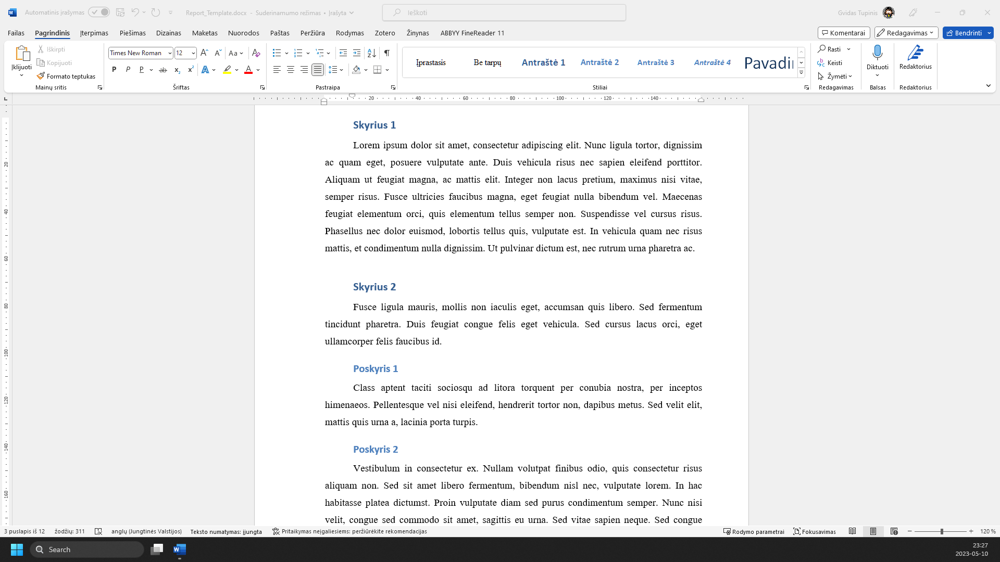
Pasirenkate skyriaus pavadinimą (bet kurio)
Dešiniu pelės klavišu spustelėjate stilių ‘Antraštė 1’
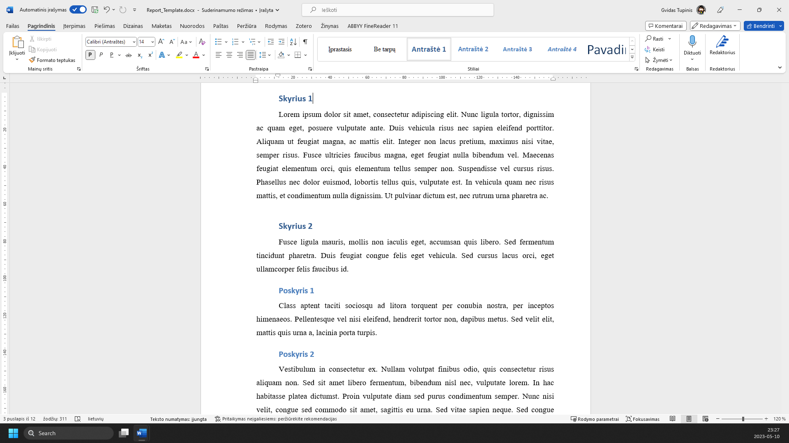
Išsiskleidžiančiame meniu pasirenkate ‘Modifikuoti...’
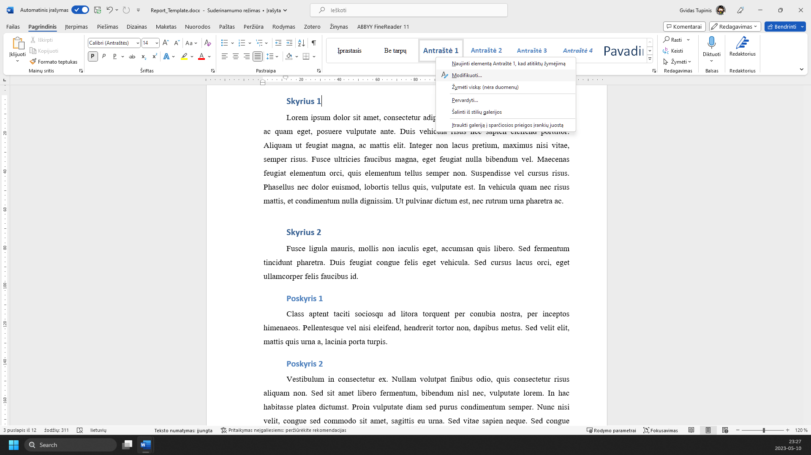
Atidarote meniu ‘Šriftas’
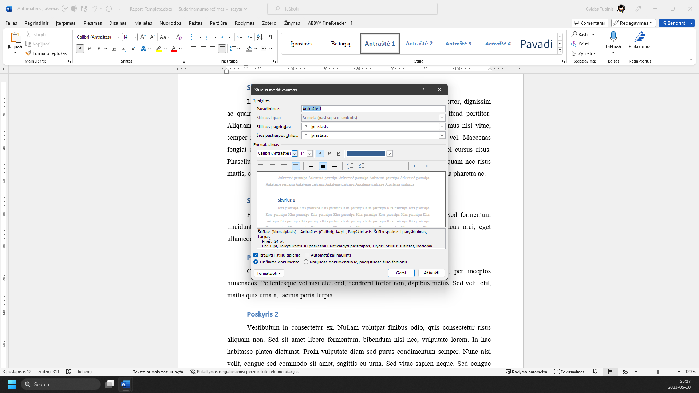
Pasirenkate šriftą ‘Times New Roman’
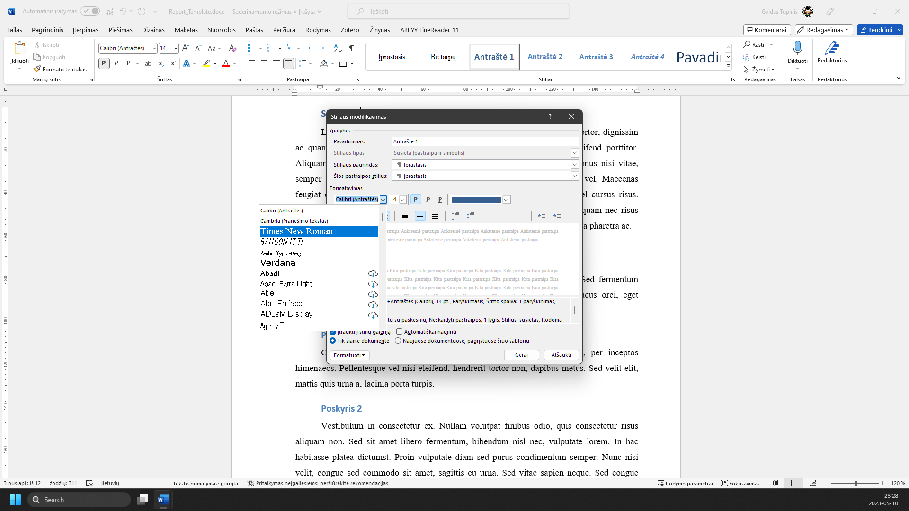
Atidarote meniu ‘Šrifto dydis’
Pasirenkate skyriaus šrifto dydį: ‘16’
Atidarote meniu ‘Šrifto spalva’
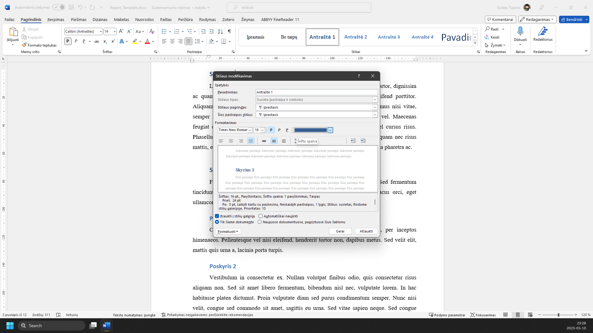
Meniu ‘Temos spalvos’ pasirenkate tinkamą (juodą) spalvą
Spaudžiate mygtuką ‘Gerai’
Pasirenkate bet kurį poskyrio pavadinimą
Dešiniu pelės klavišu spustelėjate stilių ‘Antraštė 2’
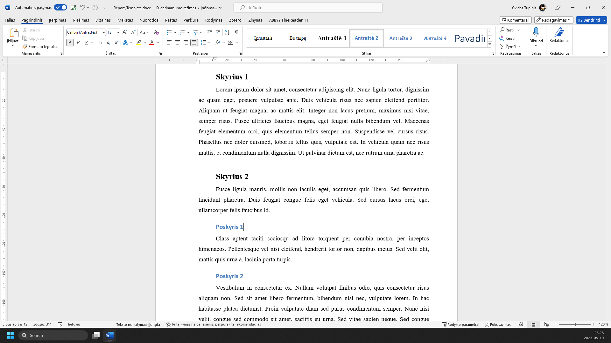
Išsiskleidžiančiame meniu pasirenkate ‘Modifikuoti...’
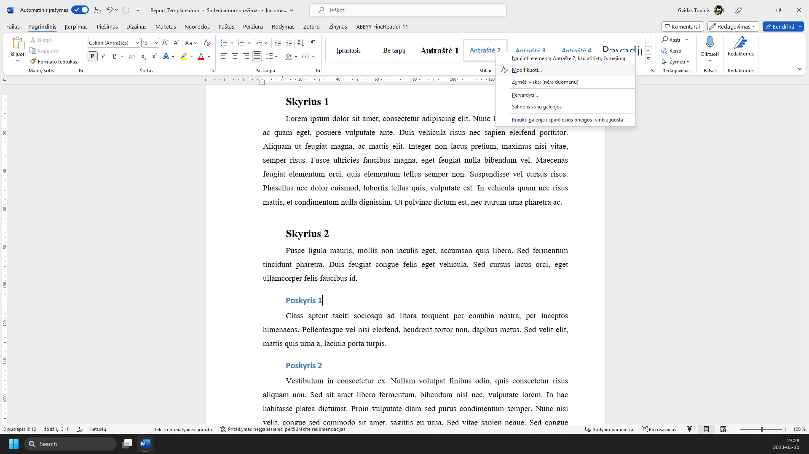
Atidarote meniu ‘Šriftas’
Pasirenkate šriftą ‘Times New Roman’
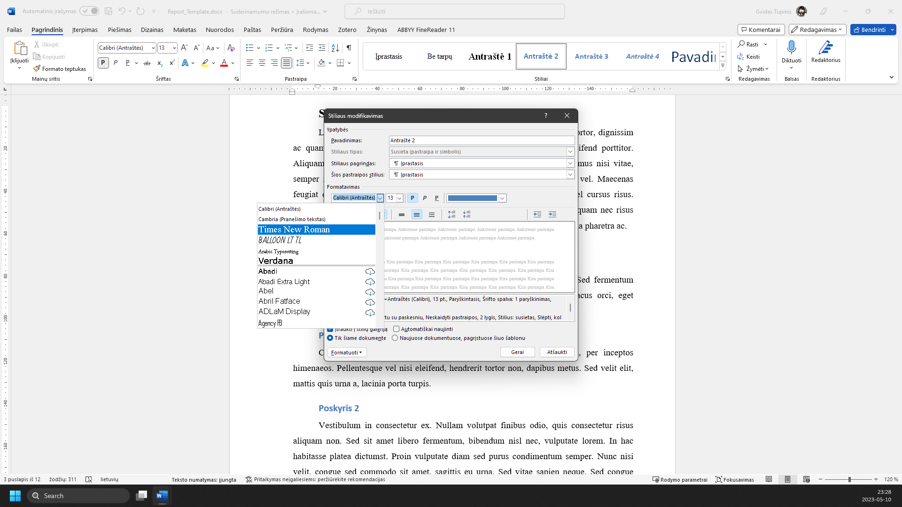
Atidarote meniu ‘Šrifto dydis’
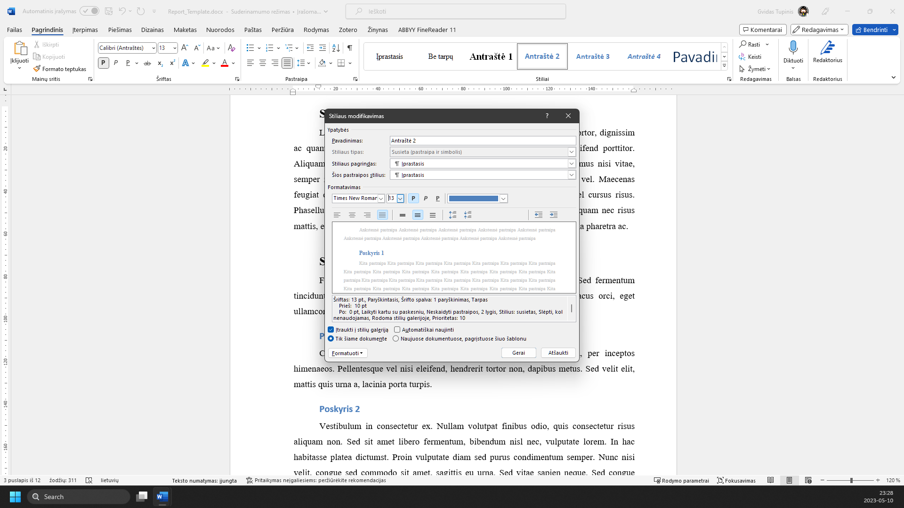
Pasirenkate skyriaus šrifto dydį: ‘14’
Atidarote meniu ‘Šrifto spalva’
Meniu ‘Temos spalvos’ pasirenkate tinkamą (juodą) spalvą
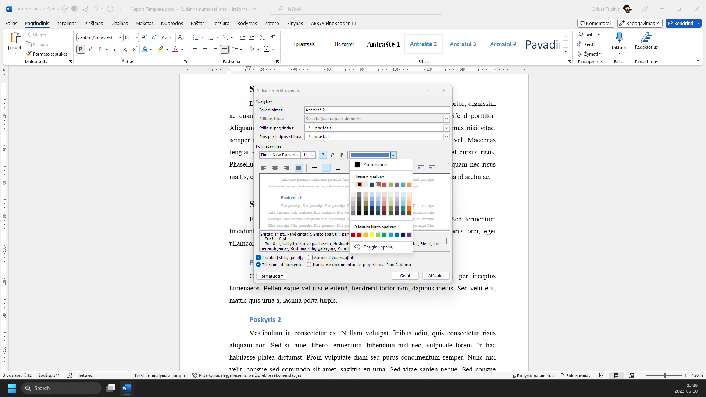
Spaudžiate mygtuką ‘Gerai’
Skyrių ir poskyrių stilius dabar yra atitinkantis reikalavimus
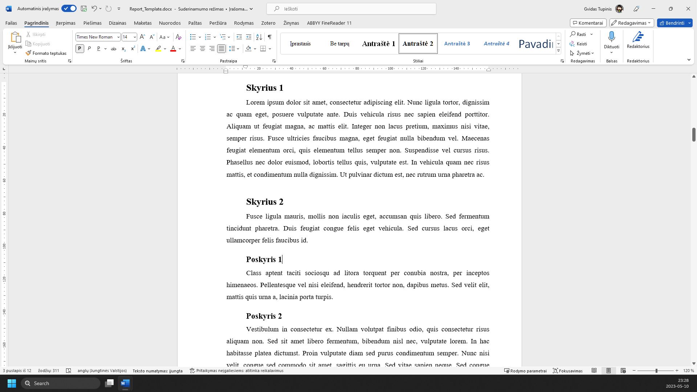
Žaliai apibrėžta vieta rodo, kur paspausti. Vaizdą gali padidinti naršyklės mastelio valdikliu. Žingsnius taip pat keičia klaviatūros rodyklės.